一、日元体系的"核心变量"：被三股力量推来推去
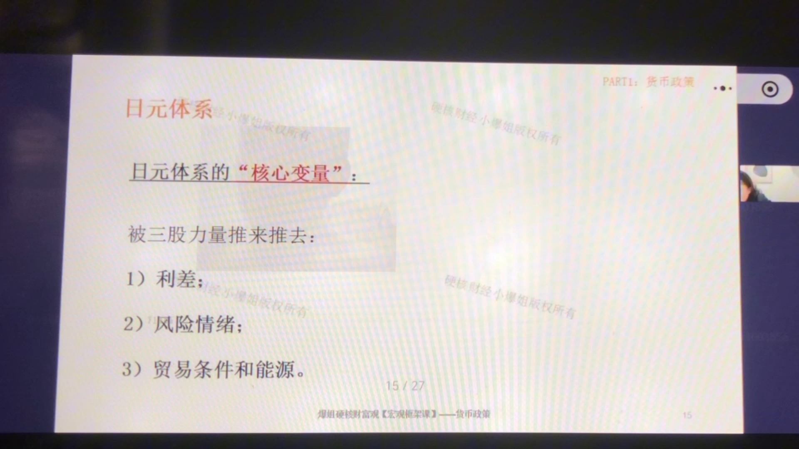
要理解日元，先记住一个比喻：日元不是一个"主动的玩家"，而是一个被三股力量推来推去的"浮标"。这三股力量分别是：
- ① 利差（核心变量）：美日利差是日元最核心的驱动。日本长期维持超低利率（负利率/零利率），日元成了全球最便宜的融资货币——全球的投资者借日元（成本几乎为零），换成美元去买美债等高息资产，赚中间的利差。这就是套息交易（Carry Trade）。只要美日利差拉大，日元就被系统性抛售、持续走弱。
- ② 风险情绪（调节变量）：日元有"避险货币"身份。市场Happy（风险偏好高）时，套息交易活跃，日元被卖出→弱；市场恐慌（风险偏好低）时，套息交易平仓，大家买回日元还债→日元强。口诀："happy日元弱、恐慌日元强"。
- ③ 贸易条件与能源（结构变量）：日本是能源进口国（石油、天然气几乎全靠进口）。油价、气价上涨→进口账单变大→经常账户恶化+对日元前景悲观→中长期贬值压力。这是埋在结构里的慢变量。
一句话框架：利差决定日元的趋势方向（系统性走弱）；风险情绪决定短期摆动（恐慌时急涨）；贸易条件与能源决定中长期底色（贬值压力）。三个变量叠加，日元才呈现"长期弱、危机急升"的特征。
二、"日元走弱"所带来的影响：一阶效应 + 二阶效应
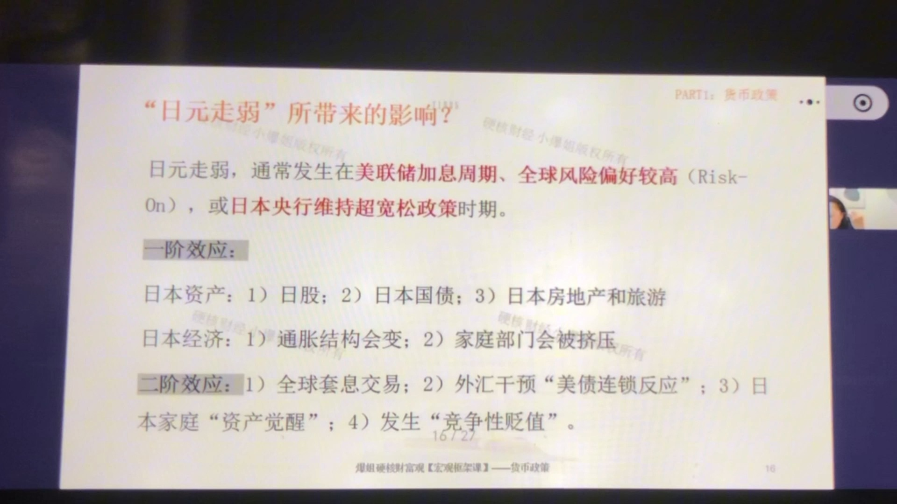
发生背景：日元走弱通常发生在美联储加息周期、全球风险偏好较高（Risk-On）、或日本央行维持超宽松政策的时期——正好是利差拉大、情绪乐观的组合。
一阶效应（直接影响）
- 日本股市：利好。出口型跨国企业（丰田、索尼等）的海外收入以美元计价，换回日元时"账面利润变多"，直接推升盈利和估值——日经225的上涨，相当一部分就是日元贬值"换"来的。
- 日本国债：理论有压力、短期被托住。日元贬值→进口商品涨价→输入型通胀→长端利率有上行压力（国债价格下跌）；但短期日本央行通过YCC（收益率曲线控制）把长端利率摁住，所以压力被推迟，长期压力仍然在。
- 日本房地产与旅游：利好。日元便宜了→外资购买力增强→海外游客变多、海外资金配置日本房产。
- 日本经济内部：家庭被挤压。日元贬值→进口能源食品涨价→家庭购买力下降；顺带科普通胀八分类（需求拉动/成本推动/货币信贷驱动/输入型/供给冲击/预期自我实现/结构性/税制改革），汇率贬值场景下最常见的是成本推动+输入型+预期自我实现三种。
二阶效应（连锁深远影响）
- 全球套息交易繁荣，日元=世界提款机：日元便宜→全球资金借日元去全世界买风险资产→全球风险资产被推高（波动率长期很低）。但风险全压在"日元融资+高杠杆组合"上——这是个定时炸弹。
- 外汇干预的"美债连锁反应"：日元贬太狠→日本财务省被迫干预（卖外汇储备、买日元）→日本外储里最大头是美债→市场预期"日本要卖美债了"→美债继续跌→收益率升→全球折现率升→美股估值被压制+美国融资成本上升。
- 日本家庭"资产觉醒"（渡边太太）：日本家庭终于把躺在银行里的存款（约一半是现金存款）搬出来，买日股、买海外资产→对日元是持续卖压、对全球风险资产是增量买盘，而且配置习惯一旦形成就回不到从前。
- "竞争性贬值"：日元快速贬值→韩国等亚洲竞争对手汇率变贵→被迫跟着贬值→区域汇率价格战，全球贸易环境恶化。
三、最近10年：日元和日经225的"负相关"
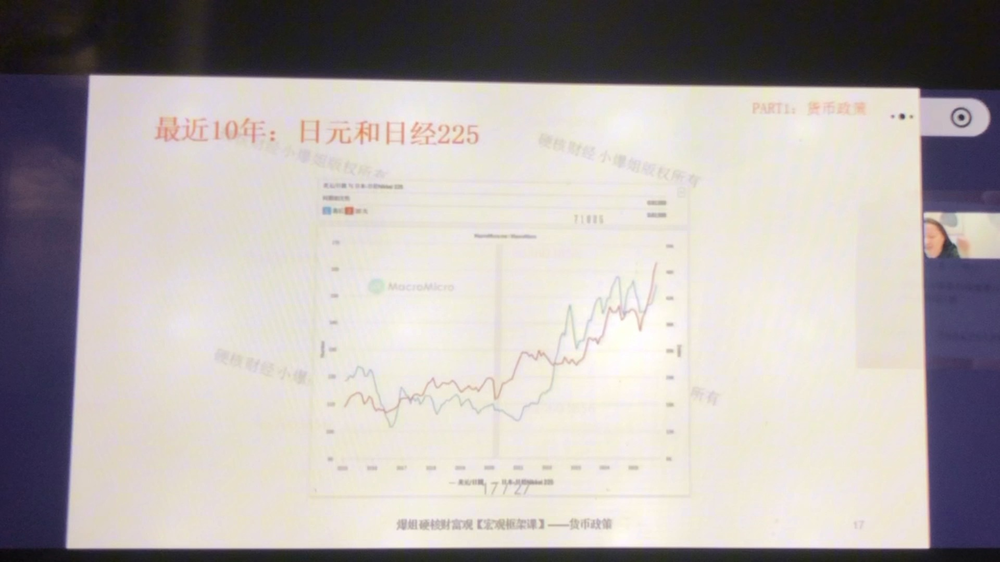
看这张图（MacroMicro，最近10年）：蓝线=美元兑日元（USD/JPY），向上代表日元贬值；红线=日经225。两条线长期同向运动——因为蓝线向上（日元贬）时，红线也向上（日股涨），所以日元与日经225本质上是负相关：日元贬值→日经225上涨；日元升值→日经225下跌。
底层是两股力量
- ① 经济结构：日本是出口型经济，跨国公司占比高，日元弱=海外利润折算变厚=股市好，这是结构性因素；
- ② 套息交易+避险情绪：日元弱=全球风险偏好高=资金涌入日股；日元强=避险=资金撤出风险资产，这是情绪性因素。
脱敏情形（相关性被打破）：如果日本出现财政严重失衡、主权信用被质疑（比如债务彻底失控），"日元弱→股市好"的负相关会失效，出现股债汇三杀，或至少日债、日元双杀——就像新兴市场危机一样。别把这个负相关当成铁律。
四、"日元走强"所带来的影响：大拆仓、长钱与通缩心态
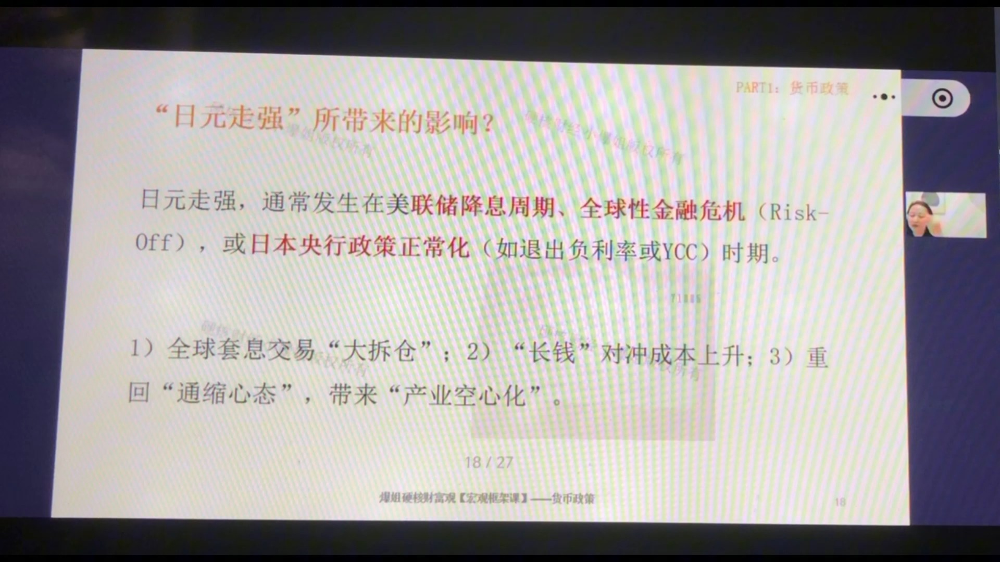
发生背景：日元走强通常发生在美联储降息周期、全球性金融危机（Risk-Off）、或日本央行政策正常化（退出负利率/YCC）时期。日元升值对日本的直接影响是负面的，但它的全球冲击力远超日本本国：
- 全球套息交易"大拆仓"——恶性螺旋：日元升值→借日元的人汇兑损失放大→被迫止损、补保证金→抛售全球股票/债券/大宗商品→换回日元还债→日元更强→更多人爆仓→全球暴跌、流动性枯竭、VIX飙升。日元的急剧走强，本质是全球市场的预警灯。
- "长钱"对冲成本上升：日本保险资金、银行、基金等"长钱"买海外资产要做货币对冲（索汇）；日元强→对冲成本上升→海外配置的收益扣掉对冲成本后不划算→新钱减少海外配置、旧钱减持美债回流买日债→美债最大的买家之一变少→美债收益率被推高→美国融资成本上升。
- 重回"通缩心态"，带来"产业空心化"：日元强→出口竞争力下降+海外利润折算缩水→企业不敢加薪→居民收入预期下降→需求疲软→通缩心态固化；同时生产基地加速外迁→高端制造、就业、资本开支外流→空心化。这要从短（盈利缩水）、中（投资外流）、长（产业竞争力衰退）三个维度看。
五、日本"政策反应函数"：财务省管汇率，央行管货币政策
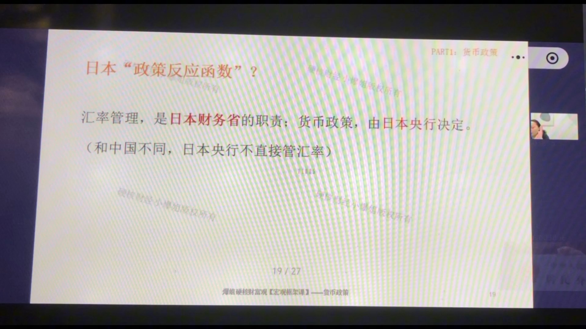
总纲：汇率管理是日本财务省的职责；货币政策由日本央行决定。（和中国不同，日本央行不直接管汇率。）而日本国债占GDP超260%（美国约120%），财政主导了整个政策框架。
日本财务省（管汇率）
- 关注什么：汇率稳不稳、波动快不快、民生成本（进口物价）高不高、是不是被做空者"围猎"；
- 出手条件：① 贬值太快（斜率陡，哪怕还没到历史低位）；② 输入型通道引发政治压力；③ 明显被做空者围猎；
- 约束：大规模干预须先与美国通气（否则被视为操纵）；
- 工具箱：口头干预→汇率检查（要求市场报价，本身就是干预预警）→直接下场卖美元买日元（专挑亚洲盘冷清、流动性差的时点）；
- 局限：干预只能减缓趋势，不能逆转趋势——根本原因是利差摆在那。
日本央行（管货币政策）
- 核心目标：核心通胀控制在2%（现在已接近3%）+ 金融体系与日债市场稳定；汇率不是目标，但可能被"借"来达成目标；
- 不能加息的两大约束：① 财政赤字太严重（利息付不起→主权信用崩塌）；② 经济基本面差（加息会打死经济）；
- 必须加息的情形：① 工资失控（春斗劳资谈判是硬指标）；② 通胀失控；③ 金融市场出问题（日债收益率曲线失真）；
- 工具箱：调整/退出YCC→退出负利率加息→缩表。
历史视角：过去日本最怕"日元升值"（通缩恐惧）；现在最怕"日元快速贬值"（能源高企+民生压力+政治环境）。怕的方向变了，政策反应也跟着变。
六、总结：日元体系——高度互联的非线性复杂系统
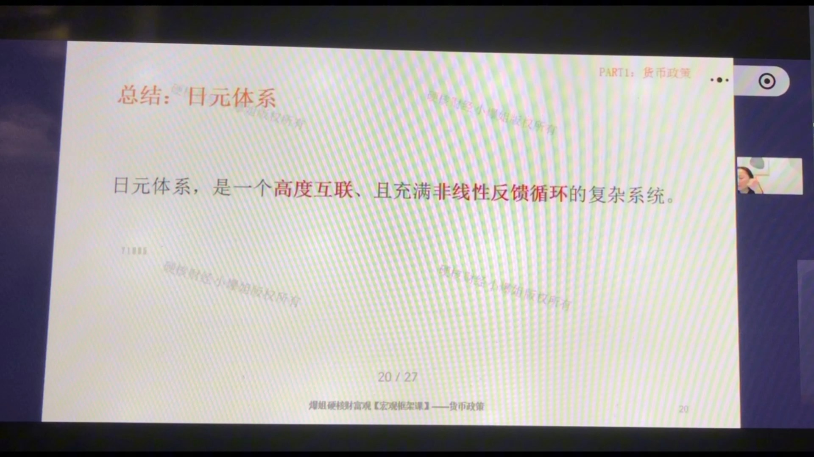
日元体系，是一个高度互联、且充满非线性反馈循环的复杂系统。几个要点收束：
- 核心矛盾=利差：美日利差摆死，日元长期系统性贬值压力；
- 最大系统性风险=套息交易大拆仓：平时日元是"世界提款机"、压低全球波动率；危机时急升，变成全球市场的放大器；
- 二阶效应影响全球：通过"外储卖美债→美债收益率"和"长钱对冲成本→美债买盘"两条链，日元强弱对美债、全球债券市场影响很大；
- 政策极限：财政主导（债务260%）+央行加息两难+大规模干预需美国通气——政策空间被锁死，只能"拖"。
七、人民币体系"底层约束"——"不可能之三角"
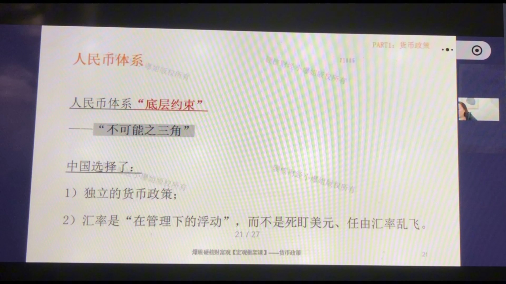
不可能三角：①资本自由进出、②货币政策完全自主、③汇率死死盯住——三者不可兼得，最多选两个。中国选择了：
- ① 独立的货币政策；
- ② 汇率是"在管理下的浮动"，而不是死盯美元、任由汇率乱飞。
放弃的是资本完全自由流动——所以必须保留资本账户管制。这个"底层约束"决定了后面所有的工具（QDII、逆周期因子、外汇风险准备金……）本质都是"阀门"，在资本管制的框架内调节流量。
推演：如果哪天真放开资本自由流动，就等于"和日本没有两样"——货币政策被外部牵着走，汇率被套息交易推来推去。管制不是要不要的问题，是选了另外两条路的必然结果。
八、"人民币走强"所带来的影响：一阶效应 + 二阶效应
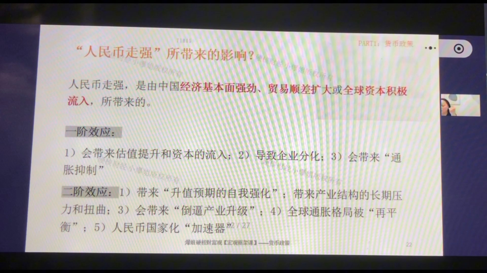
发生背景：人民币走强，通常由中国经济基本面强劲、贸易顺差扩大或全球资本积极流入所带来。
一阶效应
- 1）估值提升和资本流入：外资涌入→A股、国债估值抬升；
- 2）企业分化：进口型企业受益（航空、能源进口、外债多的公司：采购便宜+偿债成本降）；出口型企业受损（尤其低端纺织等薄利行业：产品变贵）；
- 3）"通胀抑制"：进口商品变便宜→物价被压制→利率上行压力小→债券受益；
- 外溢：中国是全球最大买家，人民币强→大宗商品购买力增强→资源出口型新兴市场受益→区域风险偏好上升。
二阶效应
- "升值预期的自我强化"：热钱涌入→汇率+股市+债市齐涨→正反馈→泡沫与金融脆弱性一起被养大；
- 产业结构的长期压力与扭曲：制造业竞争力下降→供应链外迁；资金涌向金融地产→产业空心化；
- "倒逼产业升级"：低价路线走不通→被迫向品牌、服务、高附加值升级——过程痛苦，长远有价值；
- 全球通胀格局被"再平衡"：中国是全球最大的通缩输出国，人民币升值→输出通缩的能力被削弱→全球通胀中枢抬高；
- 人民币国际化"加速器"：货币稳+值钱→各国央行愿意配置、贸易伙伴愿意用人民币结算。
九、最近10年：人民币和A/H股——A股弱相关，H股正相关
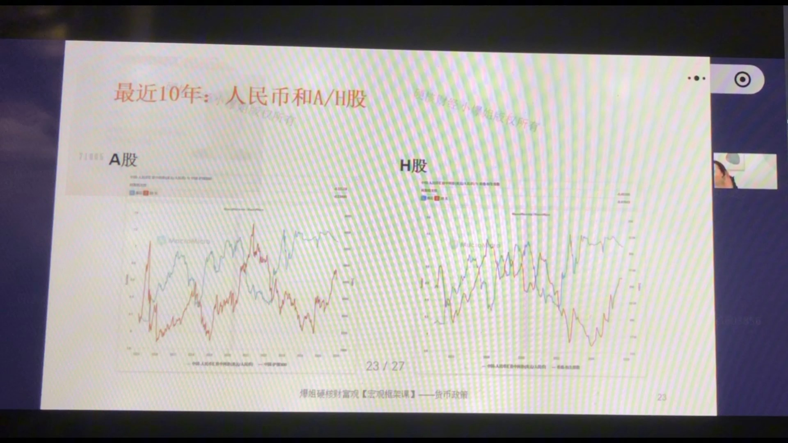
这张图分左右两半：左图（A股）：红线=沪深300，蓝线=美元兑人民币中间价；右图（H股）：红线=恒生指数，蓝线=美元兑人民币中间价（翻转）。结论截然不同：
A股：与人民币相关性很弱、且漂移
- 国内资金为主：A股是公募、私募、散户自己玩，关心的是政策、货币、信用、新故事，汇率只是"背景板"；
- 外资占比小：外资有专门团队研究中国政策，汇率在它的决策里只占很小一环；教科书那条"升值→外资流入→股市涨"的传导链太长太弱；
- 指数层面抵消：升值对进口企业利好、对出口企业利空，在指数层面互相抵消；
- 资本管制=隔音棉：资金进出不自由，海外情绪传导不进来。
实践结论：人民币走势对A股是宏观背景，不是交易信号——别拿人民币当A股的买卖依据。
H股：与人民币正相关
- 利润折算：H股公司在内地赚人民币、以港币/美元计价，人民币升值→利润折算增厚→估值加分；
- 外资同向加仓：全球资本看好中国时，既买人民币（升值），也加仓港股（港股没有管制）；
- 联系汇率：港币锚定美元，宏观预期最终体现在"人民币对美元"的波动上。
AH溢价：
A股更贵=更强的风险偏好+更充沛的本地流动性+拥挤性；H股更便宜=全球资金对中国资产的风险定价+对人民币的长期预期+新兴市场横向比较。买H股，本质是买"中国资产在全球眼中的定价"，而不是香港本地经济。
十、"人民币走弱"所带来的影响：死亡螺旋与连锁反应
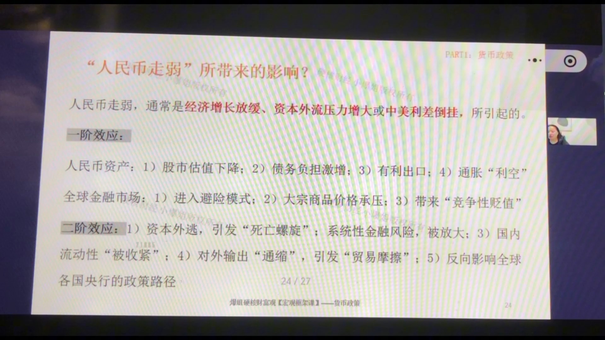
发生背景：人民币走弱，通常是经济增长放缓、资本外流压力增大或中美利差倒挂所引起。
一阶效应
- 人民币资产：① 股市估值下降（外资换美元亏钱→减持）；② 债务负担激增（房企/航空公司美元债→偿债成本上升→违约风险）；③ 有利出口；④ 通胀"利空"（输入型通胀抬头）；
- 全球金融市场：① 进入避险模式（快速大幅贬值=硬着陆预期→资金撤风险资产，抱美元/日元/美债）；② 大宗商品价格承压（最大买家购买力变弱）；③ 带来"竞争性贬值"→货币战。
二阶效应
- 资本外逃，引发"死亡螺旋"（最关键、最危险）：贬值→恐慌换汇→央行干预卖美元→外汇储备下降→更恐慌→加速外逃→恶性循环（津巴布韦式警示）；
- 系统性金融风险被放大：美元债企业集体爆雷→银行坏账→惜贷→信用收缩→连锁违约；
- 国内流动性"被收紧"：央行卖美元收人民币=回收基础货币→流动性紧→利率飙升→本该宽松时却紧缩→稳汇率与稳增长打架；
- 对外输出"通缩"，引发"贸易摩擦"：世界工厂贬值压低全球物价→贸易伙伴产业受损、失业上升→保护主义抬头；
- 反向影响全球各国央行的政策路径：输出通缩+金融波动→其他央行（如美联储）被迫跟着调整宽松节奏。
十一、中国"政策反应函数"：央行+财政部的"稳汇率"组合拳
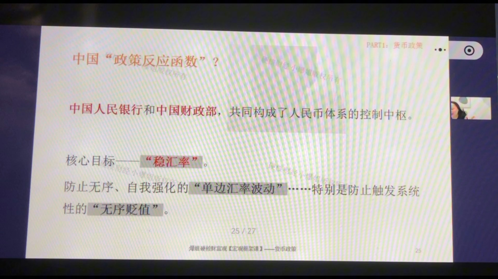
总纲：中国人民银行和中国财政部，共同构成人民币体系的控制中枢。核心目标——"稳汇率"：防止无序、自我强化的"单边汇率波动"，特别是防止触发系统性的"无序贬值"。可以波动，不可单边；更在意贬值。
升值太快时：央行"放水引压力软着陆"
- ① 放松资本管制把钱请出去：提高QDII额度让机构出海（"多利宝"限额变化=汇率承压的观测信号）；
- ② 中间价口风调整：逆周期因子调弱→公布的中间价低于市场预期→降低升值压力；
- ③ 减少外汇供给：上调外汇存款准备金率→境内美元变稀缺；
- ④ 宏观审慎收紧：收紧境内机构境外借款的额度上限；
- ⑤ 远期售汇外汇风险准备金调零：降低购买美元成本，鼓励企业套保对冲。
财政配合：出口退税回血、降低进口关税鼓励进口、加大财政支出托内需——让升值"软着陆"。
贬值太快时：五道防线（由软到硬）
- 第一道·预期管理：逆周期因子调强→中间价高于市场预期→打掉单边贬值预期（不是回点位，是释放信号）；
- 第二道·抽干离岸流动性：在香港发央票，利率定高→收回CNH→离岸拆借利率飙升→做空者借不到钱、成本飙升；
- 第三道·宏观审慎工具：上调远期售汇风险准备金→银行成本转嫁企业→恐慌购汇、投机做空成本变高；上调宏观审慎参数→鼓励境外发债结汇买入人民币对冲；
- 第四道·资本管制加码：打击地下钱庄、对敲、飞单换汇（副作用伤信心，只在压力大时用）；
- 第五道·真金白银下场：动用外汇储备（约3万多亿美元）卖美元买人民币——动用=情况危急。
财政配合（贬值）：扩大赤字、上项目、搞基建拉内需（汇率支撑的核心=经济基本面）；离岸发人民币国债（抽离岸流动性+给市场好资产）。货币财政配合=央行收流动性+给市场好资产。
十二、总结：人民币体系——动态、复杂的"生态圈"
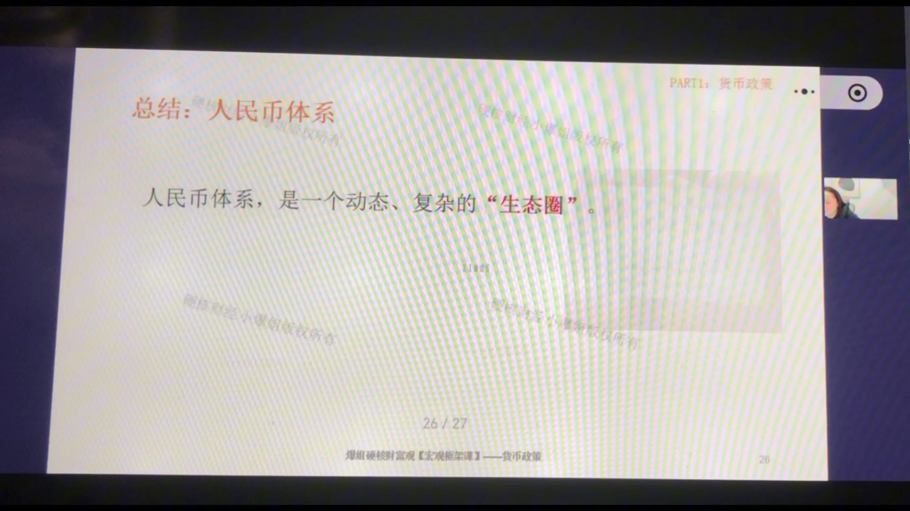
人民币体系，是一个动态、复杂的"生态圈"。不要把它当"价格曲线"看，要当"生态"看：
- 参与者都在赚钱：除央行外，出口商、老百姓、银行、投资机构都是为"赚钱效应"而行动——让他挣不到钱，汇率就稳了；
- 最脆弱点=信心的阈值：危险不在点位，而在速度和节奏——慢慢贬到10没事，一周从7贬到8就是大事；外储3万多亿 vs 基础货币，一旦信心崩了踩踏是拦不住的；
- 体系内两方拉扯：出口商（囤美元惜售→供给少→更脆弱→自我强化死循环）vs 央行（控节奏）；央行是"节奏大师"——防单边扎堆押注、防滚雪球预期失控；
- 核心交换：用汇率的空间换时间和政策操作余地（降息稳经济 vs 汇率贬）；缓慢、有节奏的可控贬值=当前现实的安全次优解；
- 盯两样东西：① 市场情绪崩没崩；② 央行是否依然掌握主旋律。长远看汇率还是走贬值——现在适当贬拉经济，经济立起来后汇率自然回升。
十三、本章小结：美元=成本，日元=胆量，人民币=分量
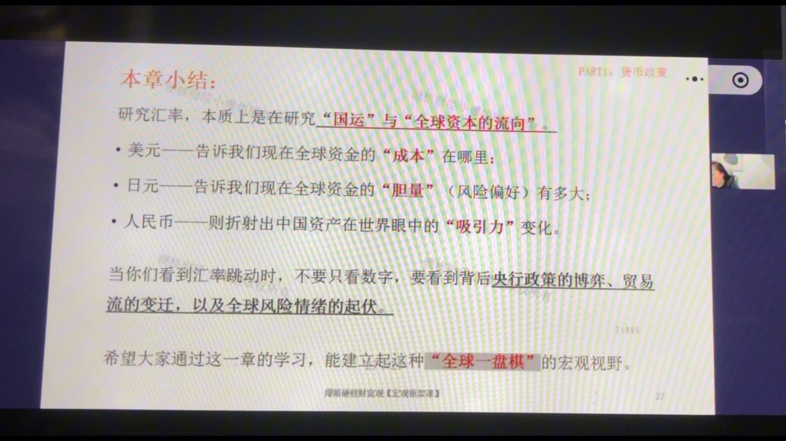
研究汇率，本质上是在研究"国运"与"全球资本的流向"。
- 美元——告诉我们现在全球资金的"成本"在哪里；
- 日元——告诉我们现在全球资金的"胆量"（风险偏好）有多大；
- 人民币——则折射出中国资产在世界眼中的"吸引力"变化。
看到汇率跳动时，不要只看数字，要看到背后央行政策的博弈、贸易流的变迁、全球风险情绪的起伏。
方法论：学宏观的价值不是记结论，而是把离散的知识点串成一个体系。建议从货币课→利率课→货币政策课→汇率课整体重搂一遍；下节课预告=美联储与央行工作的区别（汇率系列最后一节），随后进入货币政策总结，然后是宏观、美林时钟、CPI/PPI/PMI。
课程知识卡片（专业版）
以下为课程配套的专业版知识卡片，标题为"货币政策第14期：汇率（7）——日元与人民币体系：全球资产的联动与博弈"，汇总了本期核心知识点的完整框架。

专业版卡片文字摘要
- 知识点1：驱动日元变化的三大核心力量。利差与套息（核心变量）：美日利差拉开，借低息日元买高息美元资产的"套息交易"繁荣，日元被系统性抛售走弱，构成日元的趋势方向。风险情绪（调节变量）：日元避险货币属性，Risk-On时日元弱、Risk-Off时套息平仓日元强，构成短期摆动。贸易条件与能源（结构变量）：日本是能源进口国，油价气价上涨恶化经常账户，构成中长期贬值压力。实践运用：判断日元方向先看美日利差，再看全球风险情绪，最后叠加能源价格，三层变量由主到次。
- 知识点2：日元强弱周期的全球资产映射。日元走弱：一阶利好出口型企业（海外利润折算增厚）、理论利空日债（输入型通胀抬长端利率）但短期被YCC托底、利好房地产与旅游；二阶带来全球套息繁荣（日元=世界提款机）、外储干预的美债连锁反应、日本家庭"资产觉醒"（渡边太太搬存款入市）、亚洲竞争性贬值。日元走强：一阶利空出口股、压制通胀；二阶触发全球套息大拆仓（抛售全球资产换日元还债的恶性螺旋）、"长钱"对冲成本上升（美债最大买家减持→推高美债收益率→美国融资成本升）、重回通缩心态与产业空心化。实践运用：日元与日经225长期负相关（日元贬→日股涨），但若日本财政严重失衡、主权信用受疑，相关性脱敏，可能出现债汇双杀甚至股债汇三杀——不能当铁律。
- 知识点3："不可能之三角"与中国政策选择。资本自由进出、货币政策独立、汇率固定——三者只能选其二。中国选择：独立的货币政策+有管理的浮动汇率，放弃资本完全自由流动，底层约束=资本账户管制。因此QDII额度、逆周期因子、外汇风险准备金等汇率工具，本质都是在资本管制框架内调节流量的"阀门"。实践运用：理解"阀门"逻辑，才能看懂央行每次工具操作背后的真实意图（防单边、防无序）。
- 知识点4：人民币贬值周期的风险与应对。最危险的二阶效应是"资本外逃-贬值预期"的死亡螺旋（贬值→恐慌换汇→外储下降→更恐慌）。央行组合拳由软到硬五道防线：预期管理（逆周期因子调中间价）→抽干离岸流动性（香港发央票抬升拆借利率）→宏观审慎（远期售汇风险准备金+宏观审慎参数）→资本管制加码（打击地下钱庄/对敲）→央行下场（动用外储抛美元买人民币）。实践运用：央行核心目标不是守某个点位，而是管理贬值的速度与节奏——用"汇率有限空间"换"降息稳经济的政策时间"，缓慢有序的贬值才是当前现实的安全次优解。
- 知识点5：人民币与A股、H股的相关性。A股弱相关：A股以内资为主、人民币计价，投资者看国内政策/流动性/监管，汇率只是背景板；外资占比小且专门研究政策；升值对不同企业利弊在指数层面抵消；资本管制是"隔音棉"。H股正相关：港币/美元计价，升值①利润折算增厚②外资同时买人民币和H股（港股不管制）；联系汇率锚定美元。AH溢价：A股贵=风险偏好强+本地流动性充沛+拥挤；H股便宜=全球资金对中国风险定价+人民币长期预期。实践运用：别拿人民币当A股交易信号；买H股看的是"中国资产在全球眼中的定价"。
- 课程总结：日元是全球风险偏好的晴雨表与放大器——套息交易使其顺周期（风险偏好高时弱），危机大拆仓使其逆周期（恐慌时急升）；人民币是"不可能三角"下以稳定为核心的管理体系——核心任务不是守点位，而是打破单边贬值预期、防止"信心崩盘"式的死亡螺旋。美元决定全球资本的成本，日元决定全球资本的胆量，人民币折射中国资产在全球眼中的分量。
课程知识卡片（极简版）
以下为极简版知识卡片（副标题：拆解日元和人民币，看懂大国博弈的底牌），用问答形式快速回顾核心概念。
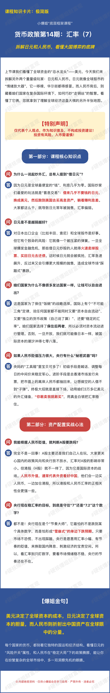
极简版卡片文字摘要
- Q：为什么全世界都爱"借日元"？
A：因为日元利息几乎为零，是全球最便宜的"提款机"。借了日元不花，换成美元去买收益更高的资产，赚中间的差价——这招叫"套息交易"。借的人越多，日元就越被抛售、越贬值。
- Q：日元越弱越好吗？
A：对日本出口企业、对全球股市短期是好事；但日元贬太狠，全球借日元炒股的人一旦遇到风吹草动，会被迫卖掉股票换回日元还债，日元反而急升、全球踩踏。日元像一个被压紧的弹簧，平时压得越狠，弹起来越吓人。
- Q：中国为什么不放开资本自由进出？
A：因为"不可能三角"——资本自由进出、货币政策独立、汇率稳定，三者只能要两个。中国要的是"货币政策我说了算+汇率别乱飞"，那就必须把资本流动管起来。放开管制，就等于把自己变成第二个日本。
- Q：人民币贬值时，央行有什么秘密武器？
A：层层加码：初级=喊话+调中间价（预期管理）；进阶=在香港发央票，把离岸人民币收干，做空的人借不到钱、成本飙升；终极大招=动用约3万亿美元外汇储备下场，你卖多少我买多少——"你敢卖，我就敢买"。
- Q：人民币贬值，A股就一定会跌吗？
A：不是一回事。A股是"自己人玩"的市场，看国内政策、央行放水；港股才是国际资本的主战场——人民币升值时，外资既买人民币、又买港股，所以人民币和港股更"同频"，和A股关系反而很弱。
- Q：央行守的是7.2还是7.5？
A：都不是。央行最怕的不是某个点位，而是"雪崩式"的单边下跌预期——慢慢贬没事，一周崩一大截就是大事。它宁愿用"小幅、有序、可预期的贬值"，去换"降息稳经济的操作空间"。这是用汇率的空间换政策的时间。
- 爆姐金句："美元决定了全球资本的成本，日元决定了全球资本的胆量，而人民币则折射出中国资产在全球眼中的分量。"看汇率，不要只看数字，要看背后各国央行的博弈、贸易的流向，和全球风险情绪的起伏。